122 equations — 122 machine-verified, 0 flagged. Green = verified, amber = flagged (still shows best LaTeX + source crop).
| # | ID | Status | Rendered (KaTeX) | Source crop (PDF) |
|---|---|---|---|---|
| 1 | III-2-1a | agreed | $$I_{\ell} = (\rho_s - \rho) g (1 - n) Q_{\ell}$$ | 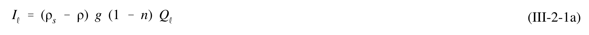 |
| 2 | III-2-1b | agreed | $$Q_{\ell} = \frac{I_{\ell}}{(\rho_s - \rho) g (1 - n)}$$ | 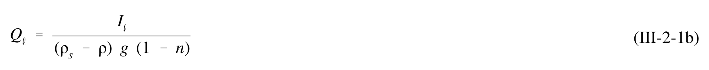 |
| 3 | III-2-2 | agreed | $$P_{\ell} = (EC_g)_b \sin \alpha_b \cos \alpha_b$$ | 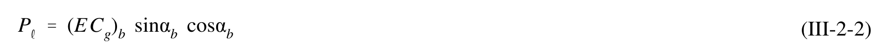 |
| 4 | III-2-3 | agreed_gt | $$E_b = \frac{\rho g H_b^2}{8}$$ | 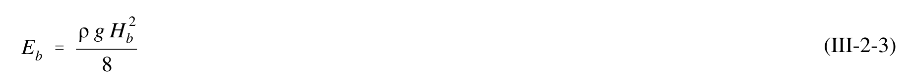 |
| 5 | III-2-4 | agreed_gt | $$C_{gb} = \sqrt{gd_b} = \left(g \frac{H_b}{\kappa}\right)^{\frac{1}{2}}$$ | 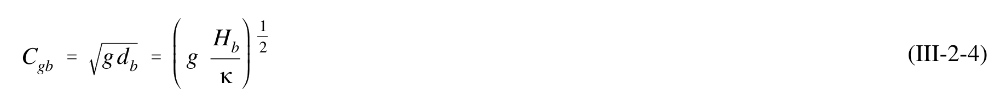 |
| 6 | III-2-5 | agreed | $$I_{\ell} = KP_{\ell}$$ | 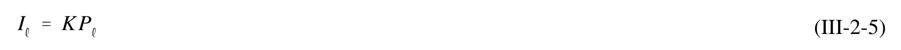 |
| 7 | III-2-6a | agreed | $$I_{\ell} = KP_{\ell} = K(EC_g)_b \sin \alpha_b \cos \alpha_b$$ | 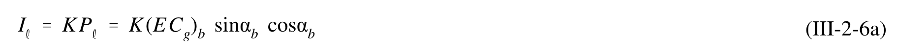 |
| 8 | III-2-6b | agreed | $$I_{\ell} = K \left( \frac{\rho g H_b^2}{8} \right) \left( \frac{g H_b}{\kappa} \right)^{\frac{1}{2}} \sin \alpha_b \cos \alpha_b$$ | 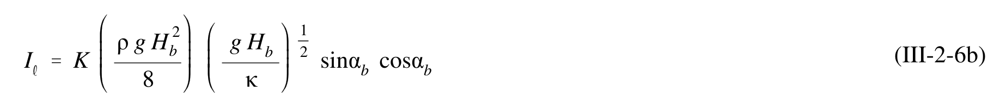 |
| 9 | III-2-6c | agreed | $$I_{\ell} = K \left( \frac{\rho g^{3/2}}{8 \kappa^{1/2}} \right) H_b^{5/2} \sin \alpha_b \cos \alpha_b$$ | 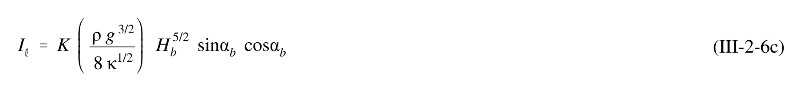 |
| 10 | III-2-6d | agreed | $$I_{\ell} = K \left( \frac{\rho g^{\frac{3}{2}}}{16 \kappa^{\frac{1}{2}}} \right) H_b^{\frac{5}{2}} \sin(2\alpha_b)$$ | 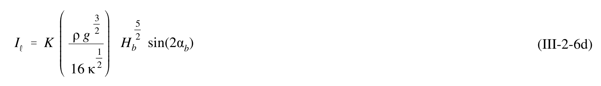 |
| 11 | III-2-7a | agreed | $$Q_{\ell} = \frac{K}{(\rho_s - \rho)g(1 - n)} P_{\ell}$$ | 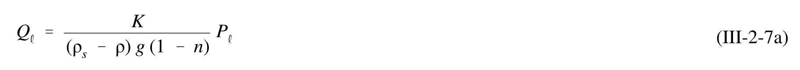 |
| 12 | III-2-7b | agreed | $$Q_{\ell} = K \left( \frac{\rho \sqrt{g}}{16 \kappa^{\frac{1}{2}} (\rho_s - \rho) (1 - n)} \right) H_b^{\frac{5}{2}} \sin(2\alpha_b)$$ | 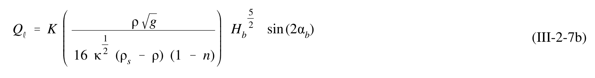 |
| 13 | III-2-8 | agreed_gt | $$K = 0.05 + 2.6 \sin^2(2\alpha_b) + 0.007 \frac{u_{mb}}{w_f}$$ | 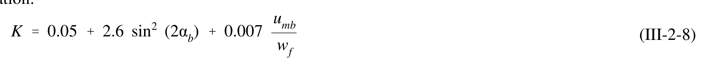 |
| 14 | III-2-9 | agreed_gt | $$u_{mb} = \frac{\kappa}{2} \sqrt{g d_b}$$ | 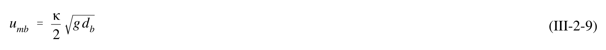 |
| 15 | III-2-10 | agreed_gt | $$K = 1.4 \ e^{(-2.5 \ D_{50})}$$ | 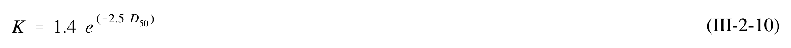 |
| 16 | III-2-11 | agreed | $$P_{\ell} = \frac{\rho g H_b W V_{\ell} C_f}{\left(\frac{5\pi}{2}\right) \left(\frac{V}{V_o}\right)}$$ | 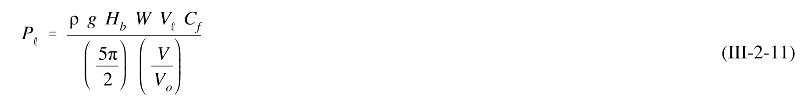 |
| 17 | III-2-17 | agreed_gt | $$u_{mb} = \frac{\kappa (g d_b)^{1/2}}{2} = \frac{1 (9.81 \times 2.0)^{1/2}}{2}$$ | 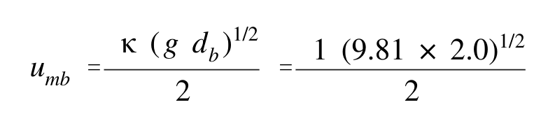 |
| 18 | III-2-18 | agreed | $$K = 0.05 + 2.6\sin^2(2\alpha_b) + 0.007\frac{u_{mb}}{w_f} = 0.05 + 2.6\sin^2(2(4.5^\circ)) + 0.007\left(\frac{2.21}{0.131}\right) \Rightarrow K = 0.23$$ | 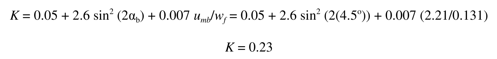 |
| 19 | III-2-19 | agreed_gt | $$K = 1.4 e^{(-2.5 D_{50})} = 0.12$$ | 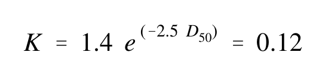 |
| 20 | III-2-20 | agreed | $$Q_{\ell} = K \left( \frac{\rho \sqrt{g}}{16 \kappa^{1/2} (\rho_s - \rho)(1 - n)} \right) H_{b rms}^{5/2} \sin(2\alpha_b)$$ | 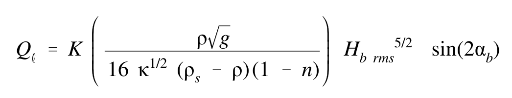 |
| 21 | III-2-21 | agreed | $$Q _ { \ell } \ = \ 0 . 2 3 \ \frac { \left( 1 0 2 5 \right) \ \left( 9 . 8 1 \right) ^ { 1 / 2 } } { 1 6 \ \mathrm { ( 1 ) } \ \left( 2 6 5 0 \ - \ 1 0 2 5 \right) \ \mathrm { ( 1 \ - \ 0 . 4 ) } } \ \left( 2 . 0 \right) ^ { 5 / 2 } \ \sin \ ( 2 \times 4 . 5 ^ { o } )$$ | 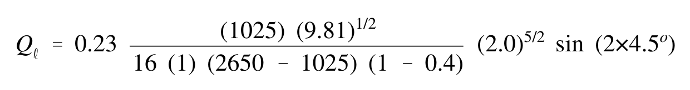 |
| 22 | III-2-22 | agreed | $$Q_{\ell} = (0.042 \text{ m}^3/\text{sec}) (3600 \text{ sec/hr}) (24 \text{ hr/day})$$ | 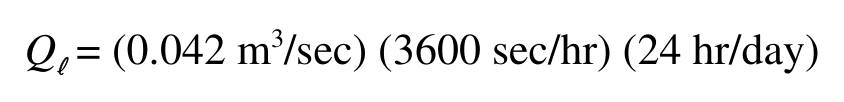 |
| 23 | III-2-23 | agreed | $$Q _ { \ell } \ = \ 0 . 1 2 \ \frac { ( 1 0 2 5 ) \ ( 9 . 8 1 ) ^ { 1 / 2 } } { 1 6 \ ( 2 6 5 0 \ - \ 1 0 2 5 ) \ ( 1 \ - \ 0 . 4 ) } \ ( 2 . 0 ) ^ { 5 / 2 } \ \sin \ ( 2 \times 4 . 5 ^ { o } )$$ | 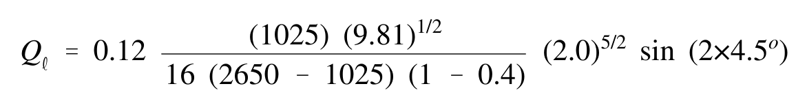 |
| 24 | III-2-24 | agreed | $$Q_{\ell} = (0.021 \text{ m}^3/\text{sec}) \times (3600 \text{ sec/hr}) \times (24 \text{ hr/day})$$ | 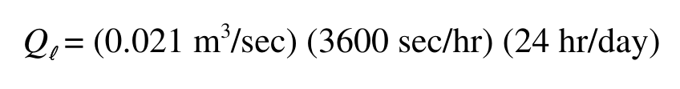 |
| 25 | III-2-25 | agreed | $$Q_{\ell} = 1.9 \times 10^3 \text{ m}^3/\text{day} (2.5 \times 10^3 \text{ yd}^3/\text{day})$$ | 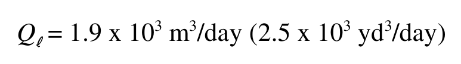 |
| 26 | III-2-26 | agreed | $$I_{\ell} = K \left( \frac{\rho g^{\frac{3}{2}}}{16 \kappa^{\frac{1}{2}}} \right) H_{b rms}^{\frac{5}{2}} \sin(2\alpha_b)$$ | 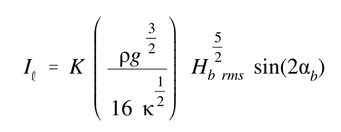 |
| 27 | III-2-27 | agreed | $$0.60 \frac{(1025) (9.81)^{\frac{3}{2}}}{16 (1)} (2.0)^{\frac{5}{2}} \sin(2 \times 4.5^{\circ}) \approx 1050 \text{ N/sec } (236 \text{ lbf/sec})$$ | 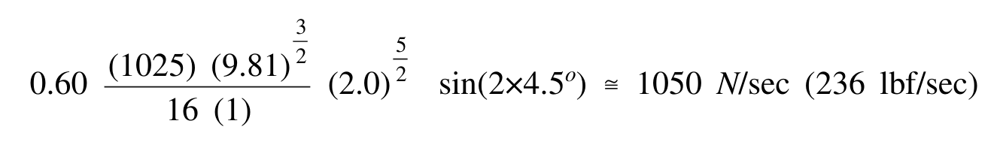 |
| 28 | III-2-28 | agreed | $$Q_{\ell} = K \left( \frac{\rho \sqrt{g}}{16 \kappa^{\frac{1}{2}} (\rho_s - \rho)(1 - n)} \right) H_{b rms}^{\frac{5}{2}} \sin(2\alpha_b)$$ | 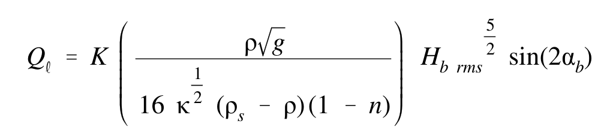 |
| 29 | III-2-29 | agreed | $$Q _ { \ell } \ = \ 0 . 6 0 \ \frac { \left( 1 0 2 5 \right) \ \left( 9 . 8 1 \right) ^ { \frac { 1 } { 2 } } } { 1 6 \ \mathrm { ( 1 ) } \ \left( 2 6 5 0 \ - \ 1 0 2 5 \right) \ \mathrm { ( 1 \ - \ 0 . 4 ) } } \ \left( 2 . 0 \right) ^ { \frac { 5 } { 2 } } \ \sin ( 2 \times 4 . 5 ^ { o } )$$ | 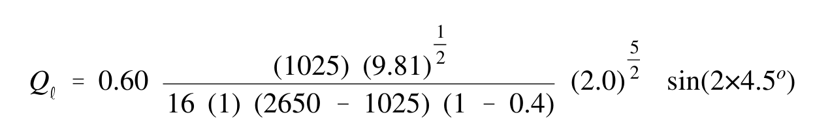 |
| 30 | III-2-30 | agreed | $$Q_{\ell} = (0.109 \text{ m}^3/\text{sec}) (3600 \text{ sec/hr}) (24 \text{ hr/day})$$ | 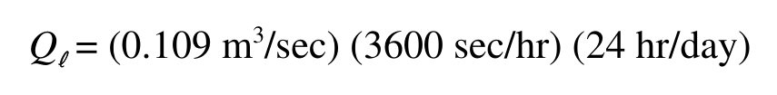 |
| 31 | III-2-31 | agreed | $$Q_{\ell} = 9.4 \text{ x } 10^3 \text{ m}^3/\text{day} (12.3 \text{ x } 10^3 \text{ yd}^3/\text{day})$$ | 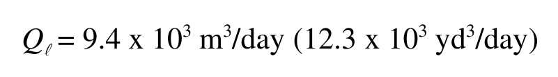 |
| 32 | III-2-32 | single_verified | $$C_{go} = gT/4\pi = 9.8 (9.4) / (4\pi) = 7.3 \text{ m/sec } (24.0 \text{ ft/sec})$$ | 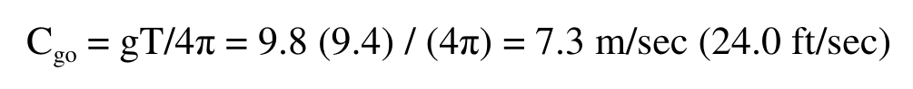 |
| 33 | III-2-33 | agreed | $$(EC_g)_o \cos \alpha_o = (2.1 \times 10^3)(7.3)\cos(7.5^\circ) = 1.5 \times 10^4 \text{ N/sec} (3.4 \times 10^3 \text{ lbf/sec})$$ | 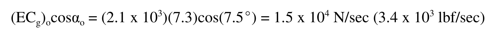 |
| 34 | III-2-34 | agreed | $$(EC_g)_b \cos \alpha_b = (EC_g)_o \cos \alpha_o$$ | 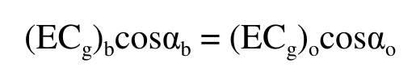 |
| 35 | III-2-35 | agreed | $$P_{\ell} = (EC_g)_b \sin\alpha_b \cos\alpha_b = [(EC_g)_o \cos\alpha_o] \sin\alpha_b = (1.5 \times 10^4) \sin(3.0^\circ)$$ | 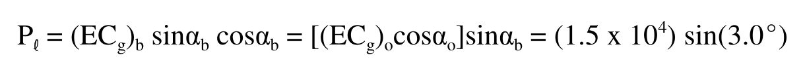 |
| 36 | III-2-36 | agreed | $$P_{\ell} = 800 \ N/\text{sec} \ (180 \ \text{lbf/sec})$$ | 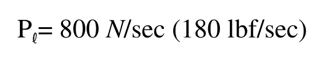 |
| 37 | III-2-37 | agreed | $$Q_{\ell} = \frac{K}{(\rho_s - \rho) g (1 - n)} P_{\ell}$$ | 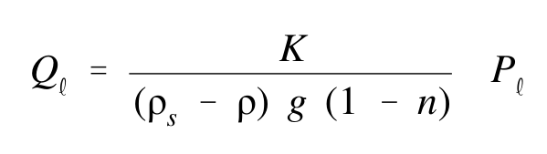 |
| 38 | III-2-38 | agreed | $$Q_{\ell} = \frac{0.60}{(2650 - 1025) (9.81) (1 - 0.4)} 800$$ | 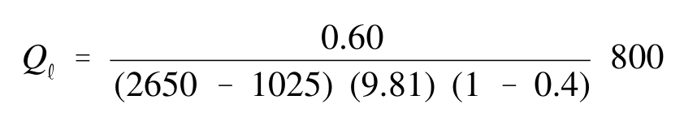 |
| 39 | III-2-39 | agreed | $$Q_{\ell} = 4.3 \times 10^3 \text{ m}^3/\text{day} (5.7 \times 10^3 \text{ yd}^3/\text{day})$$ | 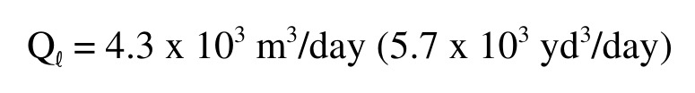 |
| 40 | III-2-40 | resolved | $$H_{b\,\mathrm{rms}} = 1.8\, \text{m} (5.9\, \text{ft}) \quad \text{and} \quad V_\ell = 0.25\, \text{m/sec} (0.82\, \text{ft/sec}),$$ | |
| 41 | III-2-41 | agreed_gt | $$V/V_o = 0.2(37.5/75) - 0.714(37.5/75)\ln{(37.5/75)} = 0.35$$ | 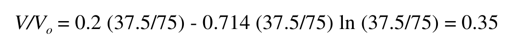 |
| 42 | III-2-42 | agreed | $$P_{\ell} = [(1025)(9.81)(1.8)(75)(0.25)(0.01)]/[(5\pi/2)(0.35)] = 1234 \text{ N/sec } (277 \text{ lbf/sec})$$ | 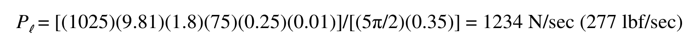 |
| 43 | III-2-43 | agreed | $$Q_{I} = (0.60)(1234)/[(2650-1025)(9.81)(1-0.4)]$$ | 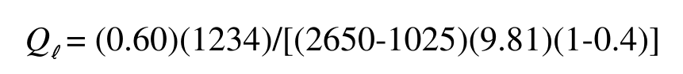 |
| 44 | III-2-44 | single_verified | $$Q_{\bullet} = 0.077 \text{ m}^3/\text{sec} = 6.7 \text{ x } 10^3 \text{ m}^3/\text{day} (8.8 \text{ x } 10^3 \text{ yd}^3/\text{day})$$ | 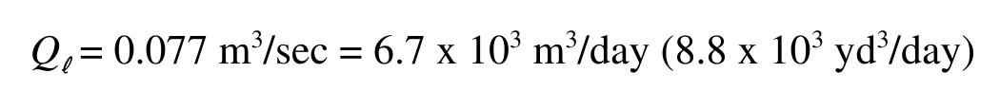 |
| 45 | III-2-12 | agreed_gt | $$\left(\frac{V}{V_o}\right) = 0.2 \left(\frac{Y}{W}\right) - 0.714 \left(\frac{Y}{W}\right) \ln\left(\frac{Y}{W}\right)$$ | 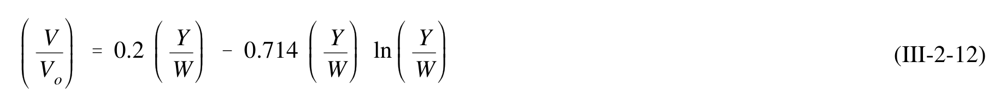 |
| 46 | III-2-13 | agreed | $$H_b = H_1^{\frac{4}{5}} \left[ \frac{C_{gl} \cos \alpha_1}{\sqrt{\frac{g}{\kappa} \cos \alpha_b}} \right]^{\frac{2}{5}}$$ | 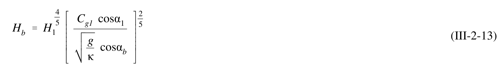 |
| 47 | III-2-14 | single_verified | $$\sin \alpha_b = \sqrt{g \frac{H_b}{\kappa}} \frac{\sin \alpha_1}{C_1}$$ | 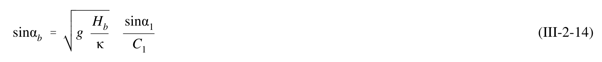 |
| 48 | III-2-15 | agreed | $$C_b = C_{gb} = \sqrt{g \ d_b} = \sqrt{g \ \frac{H_b}{\kappa}}$$ | 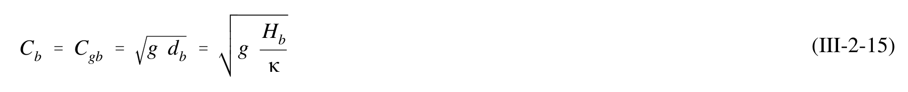 |
| 49 | III-2-16 | agreed | $$H_b = H_1^{\frac{4}{5}} (C_{gI} \cos \alpha_1)^{\frac{2}{5}} \left[ \frac{g}{\kappa} - \frac{H_b g^2 \sin^2(\alpha_1)}{\kappa^2 C_1^2} \right]^{-\frac{1}{5}}$$ | 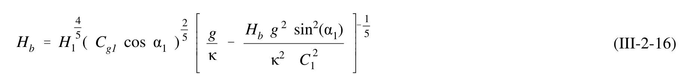 |
| 50 | III-2-17 | single_verified | $$\alpha = \theta_n - WIS \ angle$$ | 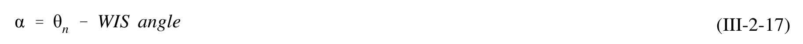 |
| 51 | III-2-51 | single_verified | $$H_{mo} = \left[\frac{(0.5)(12858) + (1.5)(4777) + (2.5)(1133) + (3.5)(288) + (4.5)(45) + (5.5)(3) + (6.5)(2)}{19106}\right] = 0.93 \text{ m}$$ | 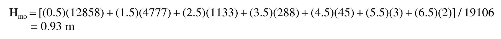 |
| 52 | III-2-52 | single_verified | $$T_{p} = [(4)(1146) + (6)(2955) + (8)(7951) + (10)(4898) + (12)(1812) + (14)(330) + (16)(14)] / 19106 = 8.4$$ | |
| 53 | III-2-53 | agreed | $$H_b \cong 1.2 \text{ m } (3.9 \text{ ft})$$ | |
| 54 | III-2-54 | agreed | $$\alpha_b = -8.8 \deg$$ | |
| 55 | III-2-55 | single_verified | $$\mathrm { Q } = ( 0 . 3 9 ) \left[ \left( 1 0 2 5 \right) \left( 9 . 8 1 \right) ^ { 0 . 5 } / \left( 1 6 \right) \left( 2 6 5 0 - 1 0 2 5 \right) \left( 1 - 0 . 4 \right) \right] \left( 1 . 2 \right) ^ { 5 / 2 } \sin ( 2 \left( - 8 . 8 \right) ) = - 0 . 0 3 8 \mathrm { m } ^ { 3 } / \mathrm { s } ^ { 2 }$$ | |
| 56 | III-2-56 | single_verified | $$Q = (-0.038 \text{ m}^3/\text{sec}) (3600 \text{ sec/hr}) (24 \text{ hr/day}) (365.25 \text{ day/yr}) (0.327) = -393,000 \text{ m}^3/\text{yr} (-514,000 \text{ cy/yr}) (\text{directed to the left})$$ | |
| 57 | III-2-18 | agreed | $$Q_{\ell NET} = \overline{Q}_{\ell} = \frac{1}{T_o} \int_{o}^{T_o} Q_{\ell}(t) dt$$ | |
| 58 | III-2-19 | agreed | $$Q_{\ell GROSS} = \frac{1}{T_o} \int_{0}^{T_o} |Q_{\ell}(t)| dt$$ | |
| 59 | III-2-20 | agreed | $$Q_{\ell} \pm \Delta Q_{\ell} \sim (H_b \pm \Delta H_b)^{\frac{5}{2}} \sin 2(\alpha_b \pm \Delta \alpha_b)$$ | |
| 60 | III-2-21 | agreed | $$\Delta Q_{\ell} \sim \pm Q_{\ell} \left( \frac{\Delta \alpha_b}{\alpha_b} + \frac{5}{2} \frac{\Delta H_b}{H_b} \right)$$ | |
| 61 | III-2-22 | agreed | $$q_x(y) = k_q \frac{1}{d} \frac{\partial}{\partial x} (E C_g) V_{\ell}$$ | |
| 62 | III-2-23 | agreed | $$q_x(y) = k_q \frac{1}{8} \rho g^{\frac{3}{2}} \frac{H}{\sqrt{H+d}} \left[ 2\frac{dH}{dy} + \frac{H}{2(H+d)} \frac{d}{dy} (H+d) \right] V_{\ell}$$ | |
| 63 | III-2-63 | agreed | $$\int_{y_s}^{y_b}\frac{q_x(y)}{k_q}\ dy = \frac{1}{k_q}\int_{106}^{260} q_x(y)\ dy \approx \frac{9300}{k_q}\ \frac{\text{kg m}^2}{\sec^4}$$ | |
| 64 | III-2-64 | agreed | $$\frac{\sin \alpha_1}{C_{gl}} = \frac{\sin \alpha_b}{C_{gb}}$$ | |
| 65 | III-2-65 | agreed_gt | $$\frac{\sin 10^o}{9.0} = \frac{\sin \alpha_b}{(9.81 (3.2))^{\frac{1}{2}}}$$ | |
| 66 | III-2-66 | single_verified | $$\alpha_b = 6.2^o$$ | |
| 67 | III-2-67 | agreed | $$Q_{\ell} = K \left( \frac{\rho \sqrt{g}}{16 \kappa (\rho_{s} - \rho)(1 - n)} \right) H_{b rms}^{\frac{5}{2}} \sin(2\alpha_{b})$$ | |
| 68 | III-2-68 | agreed | $$Q _ { \ell } \ = \ 0 . 6 0 \ \frac { \left( 1 0 2 5 \right) \left( 9 . 8 1 \right) ^ { \frac { 1 } { 2 } } } { 1 6 \ \mathrm { ( 1 ) } \ ( 2 6 5 0 \ - \ 1 0 2 5 ) \ \mathrm { ( 1 \ - \ 0 . 4 ) } } \ \left( 2 . 4 2 \right) ^ { \frac { 5 } { 2 } } \ \sin ( 2 \mathrm { ( 6 . 2 ^ { \circ } ) } )$$ | |
| 69 | III-2-69 | agreed | $$Q_{\ell} = (0.242 \text{ m}^3/\text{sec}) (3600 \text{ sec/hr}) (24 \text{ hr/day})$$ | |
| 70 | III-2-70 | agreed | $$Q_{\ell} = 20.9 \times 10^3 \text{ m}^3/\text{day} (27.3 \times 10^3 \text{ yd}^3/\text{day})$$ | |
| 71 | III-2-71 | single_verified | $$\frac { 9 3 0 0 } { k _ { q } } \frac { k g \ m ^ { 2 } } { \sec ^ { 4 } } = 0 . 2 4 2 \frac { m ^ { 3 } } { \sec }$$ | |
| 72 | III-2-24 | agreed_gt | $$\frac{R}{R_o} = C_o + C_1 \left(\frac{\beta}{\theta}\right) + C_2 \left(\frac{\beta}{\theta}\right)^2$$ | |
| 73 | III-2-25 | agreed | $$\varepsilon \frac{\partial^2 y}{\partial x^2} = \frac{\partial y}{\partial t}$$ | |
| 74 | III-2-26 | agreed_gt | $$\varepsilon = \frac{KH_b^2 C_{gb}}{8} \left(\frac{\rho}{\rho_s - \rho}\right) \left(\frac{1}{1 - n}\right) \left(\frac{1}{d_B + d_c}\right)$$ | |
| 75 | III-2-75 | single_verified | $$\mathrm { F o r \, } \theta = 3 0 \, \mathrm { d e g } ; \, \mathrm { R } = [ \, 0 . 0 5 + 1 . 1 4 ( 3 0 / 3 0 ) - 0 . 1 9 ( 3 0 / 3 0 ) ^ { 2 } \, ] \, ( 1 7 5 \mathrm { m } \, ) = 1 7 5 \mathrm { m }$$ | |
| 76 | III-2-76 | single_verified | $$\mathrm { F o r \, } \theta = 7 5 \mathrm { \, d e g } \colon \mathrm { \, R = } [ \mathrm { \, } 0 . 0 5 + 1 . 1 4 ( 3 0 / 7 5 ) - 0 . 1 9 ( 3 0 / 7 5 ) ^ { 2 } \mathrm { \, J \, } ( 1 7 5 \mathrm { \, m \, } ) = 8 3 \mathrm { \, m \, }$$ | |
| 77 | III-2-77 | agreed | $$R = [0.05 + 1.14(30/180) - 0.19(30/180)^2](175\text{ m}) = 41\text{ m}$$ | |
| 78 | III-2-27a | agreed | $$Q_{\ell} = Q_o K_a \tan(\alpha_b) \quad \text{for} \quad 0 \leq \tan \alpha_b \leq 1.23$$ | |
| 79 | III-2-27b | agreed | $$Q _ { \ell } = Q _ { o } { \frac { K _ { b } } { \tan { ( \alpha _ { b } ) } } } \quad { \mathrm { f o r } } \quad 1 . 2 3 < \tan { ( \alpha _ { b } ) }$$ | |
| 80 | III-2-28 | agreed | $$y = 2\sqrt{\varepsilon t} \tan(\alpha_b) \left\{ \frac{1}{\sqrt{\pi}} \exp\left[ -\left(\frac{x}{2\sqrt{\varepsilon t}}\right)^2 \right] - \frac{x}{2\sqrt{\varepsilon t}} \operatorname{erfc}\left(\frac{x}{2\sqrt{\varepsilon t}}\right) \right\}, \text{ for } t < t_f$$ | |
| 81 | III-2-81 | agreed | $$\operatorname{erf}(x) = \frac{2}{\sqrt{\pi}} \int_0^x e^{-z^2} dz$$ | |
| 82 | III-2-29 | agreed_gt | $$t_f = \frac{Y^2 \pi}{4 \epsilon \tan^2(\alpha_b)}$$ | |
| 83 | III-2-30 | single_verified | $$y = Y \operatorname{erfc}\left(\frac{x}{2\sqrt{\varepsilon t_2}}\right) , t > t_f$$ | |
| 84 | III-2-31 | agreed | $$y = \frac{Y}{2} \left\{ erf \left[ \left( \frac{a}{2\sqrt{\epsilon t}} \right) \left( 1 - \frac{x}{a} \right) \right] + erf \left[ \left( \frac{a}{2\sqrt{\epsilon t}} \right) \left( 1 + \frac{x}{a} \right) \right] \right\}$$ | |
| 85 | III-2-85 | agreed | $$\varepsilon = \frac{0.77 (2)^2 \sqrt{9.81 \cdot 2}}{8} \cdot \left(\frac{1}{2.65 - 1}\right) \cdot \frac{1}{(1 - 0.4)} \left(\frac{1}{6}\right) = 0.287 \frac{m^2}{\text{sec}}$$ | |
| 86 | III-2-86 | agreed | $$\frac{y}{2\sqrt{\varepsilon t} \tan (\alpha_b)} = \frac{1}{\sqrt{\pi}} \approx 0.564$$ | |
| 87 | III-2-87 | agreed | $$\frac{300}{2\sqrt{0.287 t} \tan{(5^0)}} \approx 0.564$$ | |
| 88 | III-2-88 | agreed | $$\frac{y}{2\sqrt{0.287(604800)}\tan(5^0)} = \frac{1}{\sqrt{\pi}}$$ | |
| 89 | III-2-89 | agreed | $$\frac{x}{2\sqrt{\epsilon t}} = \frac{500}{2\sqrt{0.287(604800)}} = 0.60 \quad ; \quad 2\sqrt{\epsilon t} \tan(\alpha_b) = 72.9 \text{ m}$$ | |
| 90 | III-2-90 | agreed | $$\frac{y}{2\sqrt{\varepsilon t}\tan(\alpha_b)} \cong \left[\frac{1}{\sqrt{\pi}}\exp(-0.6^2) - 0.6(0.42)\right] = 0.14$$ | |
| 91 | III-2-91 | agreed_gt | $$y = (0.14) (72.9 \text{ m}) = 10.2 \text{ m}$$ | |
| 92 | III-2-92 | single_verified | $$\frac{y}{y} = \left[ \exp(-u^2) - \sqrt{\pi} \ u \ erfc(u) \right]$$ | |
| 93 | III-2-93 | agreed | $$u = \frac{x}{2\sqrt{\varepsilon t_f}} = \frac{x}{Y} \frac{1}{\sqrt{\pi}} \tan(\alpha_b)$$ | |
| 94 | III-2-94 | agreed | $$\frac{x}{Y} = u \frac{\sqrt{\pi}}{\tan(\alpha_b)} = 0.96 \frac{\sqrt{\pi}}{\tan(5^0)} = 19.4$$ | |
| 95 | III-2-32 | agreed | $$p(t) = \frac{1}{\sqrt{\pi}} \left( \frac{\sqrt{\varepsilon t}}{a} \right) \left\{ \exp \left( -\left( \frac{a}{\sqrt{\varepsilon t}} \right)^2 \right) - 1 \right\} + erf\left( \frac{a}{\sqrt{\varepsilon t}} \right)$$ | |
| 96 | III-2-33 | single_verified | $$y = \frac{Y_o}{2} \left\{ (1-X) \ erf (U(1-X)) + (1+X) \ erf (U (1+X)) -2 \ Xerf (UX) + \frac{1}{\sqrt{\pi}U} \left( e^{-U^2 (1+X)^2} + e^{-U^2 (1-X)^2} - 2e^{-(UX)^2} \right) \right\}$$ | |
| 97 | III-2-97 | single_verified | $$X = { \frac { x } { a } } \qquad a n d \qquad U = { \frac { a } { 2 \ { \sqrt { \varepsilon t } } } }$$ | |
| 98 | III-2-34 | agreed | $$y = \frac{Y}{2} \left\{ erfc \left[ \left( \frac{a}{2\sqrt{\varepsilon t}} \right) \left( 1 - \frac{x}{a} \right) \right] + erfc \left[ \left( \frac{a}{2\sqrt{\varepsilon t}} \right) \left( 1 + \frac{x}{a} \right) \right] \right\}$$ | |
| 99 | III-2-35 | single_verified | $$y = \frac{Y_o}{2} \left\{ 1 + erf\left(\frac{x}{2\sqrt{\varepsilon t}}\right) \right\}$$ | |
| 100 | III-2-100 | single_verified | $$\mathrm { a } = 5 , 0 0 0 / 2 = 2 , 5 0 0 \mathrm { m } ; \mathrm { Y } _ { \mathrm { o } } = 5 0 \mathrm { m }$$ | |
| 101 | III-2-101 | agreed | $$\varepsilon = \frac{0.77 (3)^2 \sqrt{9.81 \cdot 3}}{8} \left(\frac{1}{2.65 - 1}\right) \left(\frac{1}{1 - 0.4}\right) \left(\frac{1}{3 + 7}\right)$$ | |
| 102 | III-2-102 | agreed | $$(t = 259,200 \text{ sec})$$ | |
| 103 | III-2-103 | agreed | $$\frac { a } { 2 \sqrt { \varepsilon t } } \ = \ \frac { 2 , 5 0 0 } { 2 \sqrt { 0 . 4 7 \ ( 2 5 9 , 2 0 0 ) } } \ = \ 3 . 5 8$$ | |
| 104 | III-2-104 | single_verified | $${ \frac { x } { a } } \ = \ 1 . 0 \qquad { \frac { y } { Y _ { o } } } \ = \ 0 . 5 6 \quad { \mathrm { h e n c e } } , \ y \ = \ 0 . 5 6 \ ( 5 0 ) \ = \ 2 8 \ { \mathrm { m } }$$ | |
| 105 | III-2-105 | agreed | $$\frac { a } { 2 \sqrt { \varepsilon t } } \ = \ \frac { 2 , 5 0 0 } { 2 \sqrt { 0 . 4 7 \ ( 7 , 2 5 7 , 6 0 0 ) } } \ = \ 0 . 6 8$$ | |
| 106 | III-2-106 | single_verified | $${ \frac { x } { a } } \ = \ 1 . 0 \qquad { \frac { y } { Y _ { 0 } } } \ = \ 0 . 4 6 \quad { \mathrm { h e n c e , } } \quad y \ = \ 0 . 4 6 \ ( 5 0 ) \ = \ 2 3 \ { \mathrm { m } }$$ | |
| 107 | III-2-36 | single_verified | $$y = Y_o \left( 1 + erf \left( \frac{x}{2\sqrt{\varepsilon t}} \right) \right)$$ | |
| 108 | III-2-37 | single_verified | $$y = Y_o \ erfc \left( \frac{x}{2\sqrt{\varepsilon} t} \right)$$ | |
| 109 | III-2-38 | agreed | $$y = w - l\left(1-\frac{x}{l}\right)\tan(\alpha_b) + \frac{2\tan(\alpha_b)}{l} \sum_{n=0}^{\infty} \left[\frac{2l}{(2n+1)\pi}\right]^2 \exp\left\{-\varepsilon\frac{(2n+1)^2\pi^2t}{4l^2}\right\} \cos\left[\frac{(2n+1)\pi x}{2l}\right]$$ | |
| 110 | III-2-39 | agreed | $$y = Y_o \ erfc \left(\frac{x}{2\sqrt{\varepsilon t}}\right) + \left(Y_1 - Y_o\right) \ erfc \left(\frac{x}{2\sqrt{\varepsilon(t - t_1)}}\right) + \left(Y_2 - Y_1\right) \ erfc \left(\frac{x}{2\sqrt{\varepsilon(t - t_2)}}\right)$$ | |
| 111 | III-2-111 | agreed | $$\varepsilon = \frac{0.77 (1)^2 \sqrt{9.81 \cdot 1}}{8} \left(\frac{1}{2.65 - 1}\right) \left(\frac{1}{1 - 0.4}\right) \left(\frac{1}{6}\right)$$ | |
| 112 | III-2-112 | agreed | $$\approx 0.0508 \frac{\text{m}^2}{\text{sec}}$$ | |
| 113 | III-2-113 | agreed | $$y(1\text{ mile}, 3\text{ months}) = 50 \cdot erfc\left(\frac{1609}{2\sqrt{0.0508 \cdot 7.78 \times 10^6}}\right)$$ | |
| 114 | III-2-114 | agreed | $$\approx 50 \cdot \operatorname{erfc}(1.28)$$ | |
| 115 | III-2-115 | agreed | $$\approx \, 5 0 \left( 0 . 0 7 \right) \, \cong \, 3 . 5 \mathrm { \, m \, }$$ | |
| 116 | III-2-116 | agreed | $$y(x, t) = Y_o \cdot erfc\left(\frac{x}{2\sqrt{\varepsilon t}}\right) + (Y_1 - Y_o) \cdot erfc\left(\frac{x}{2\sqrt{\varepsilon(t - t_1)}}\right)$$ | |
| 117 | III-2-117 | agreed | $$y(x,t) = 50 \cdot \text{erfc}\left(\frac{x}{2\sqrt{\varepsilon t}}\right) + 50 \, \text{erfc}\left(\frac{x}{2\sqrt{\varepsilon t}} \cdot \sqrt{1 - \frac{t_1}{t}}\right) = \text{term 1} + \text{term 2}$$ | |
| 118 | III-2-40 | agreed | $$\frac{\Delta y}{\Delta t} + \frac{1}{d_B + d_C} \left( \frac{\Delta Q_{\ell}}{\Delta x} \pm q \right) = 0$$ | |
| 119 | III-2-41 | single_verified | $$\alpha_b = \alpha_{bg} - \alpha_{sg} = \alpha_{bg} - \tan^{-1}\left(\frac{dy}{dx}\right)$$ | |
| 120 | III-2-42 | agreed | $$Q_{\ell} = H_{b \ sig}^2 \ C_{gb} \left( a_1 \ sin2\alpha_b - a_2 \cos\alpha_b \frac{dH_{b \ sig}}{dx} \right)$$ | |
| 121 | III-2-43 | agreed_gt | $$a_1 = \frac{K_1}{16\left(\frac{\rho_s}{\rho} - 1\right) (1 - n) (1.416)^{\frac{5}{2}}}$$ | |
| 122 | III-2-44 | agreed_gt | $$a_2 = \frac{K_2}{8\left(\frac{\rho_s}{\rho} - 1\right) (1 - n) \ m \ (1.416)^{\frac{7}{2}}}$$ |